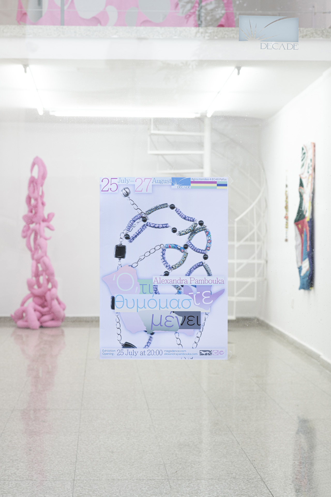

about
I am a visual artist
The main concepts around my work are sustainability, rituality, tradition, and playfulness. I create abstract forms combining colour, shapes, and rhythm. With “the seriousness of a child at play,” I choose leftover pieces of fabric and other materials, reclaiming what others deem waste, and transform them into a language of renewal, softness, and resilience - creating new forms in which vulnerability itself becomes a form of resistance.